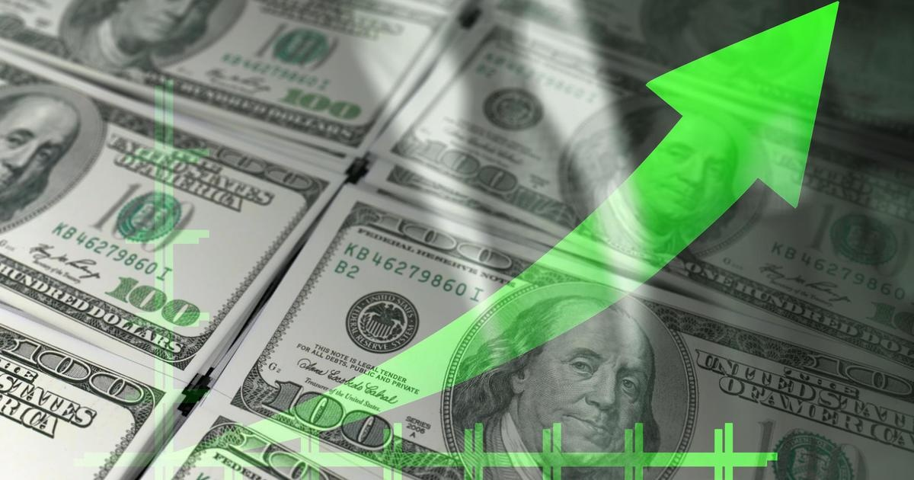

Savings account rates are high. Here's how to take advantage of them.Building savings is essential to your financial well-being. You never know when you might find yourself needing some sudden cash. If you lose your job, fall ill or face an unexpected expense like a costly car repair, savings can help you to stay on track and avoid incurring debt. However much you have to put away, every dollar and cent safeguards you from bumps in the road. One upside to the environment we live in today is the potential to faster with accounts offering high annual percentage yields (APYs). Read on to learn how to get the most from today's high interest rates and start earning more now. View today's savings rates to see how much more you could earn. How to take advantage of high savings rates High interest rates help your money work harder for you. Here's how to capitalize on today's high rates and boost your savings. A high-yield savings account If you have a regular savings account, you're — especially when interest rates are high. can earn up to 10 to 15 times more than regular savings accounts, plus they often come with perks like . All savings accounts are protected if they're provided by an FDIC-insured bank or NCUA-insured credit union. This means your money is up to $250,000 per account per institution should the bank or credit union fail. To see which high-yield accounts offer the best rates today, compare your options here. A certificate of deposit (CD) Another option for earning higher interest on your savings is with a . A CD is a type of account with a fixed interest rate and a fixed term. The can be higher than regular savings accounts, but you must be able to afford to lock your money up for a (ranging from a few months to several years). You can access CD funds in the event of a true emergency, but you'll pay a penalty — usually a portion of your earned interest. Still, the payoff can be worth it if you have the patience to wait for the entire CD term. Plus, you can always with different terms to ensure regular access to your cash at optimal interest rates. As a type of savings account, CDs are by federal deposit insurance as long as they're provided by an FDIC-insured bank or NCUA-insured credit union. The bottom line High interest rates can cost you in many areas of your financial life. One way to get some good out of them is to harness the power of high APYs with an interest-bearing deposit account like a or . depends on your individual savings goals and liquidity needs. That said, you may want to consider how you can maximize your earnings and ensure regular access to your cash by opening both types of accounts. With interest rates where they are today, the more savings you have, the more interest you can earn. for more features. |
 |